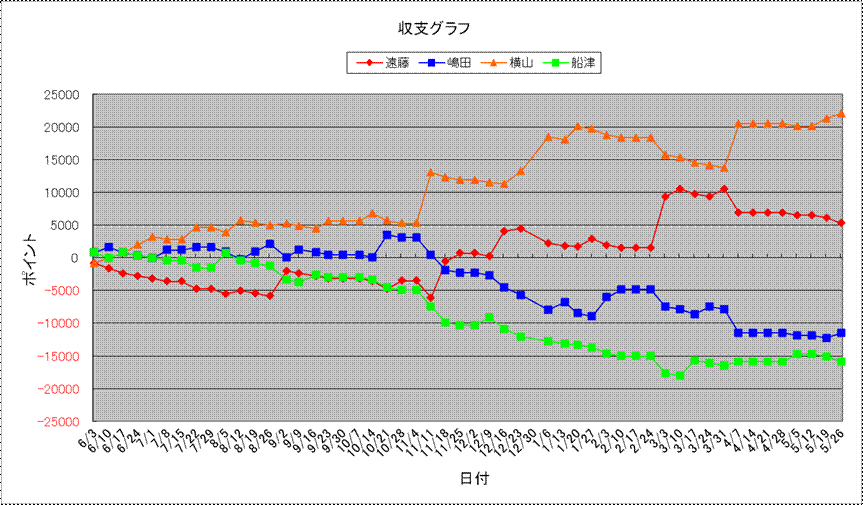

| 順位 | 馬主 | 今年度収支 | 今年度ﾎﾟｲﾝﾄ | 1頭当ﾎﾟｲﾝﾄ | 1走当ﾎﾟｲﾝﾄ | 勝率 | 連対率 | 複勝率 | ﾃﾞﾋﾞｭｰ頭数 | 勝馬頭数 | 出走回数 | 1着 | 2着 | 3着 | 4着 | 5着 | 着外 |
|---|---|---|---|---|---|---|---|---|---|---|---|---|---|---|---|---|---|
| 1 | 横山 | 22100 | 15300 | 1020.0 | 196.2 | 25.64% | 41.03% | 48.72% | 15 | 12 | 78 | 20 | 12 | 6 | 2 | 3 | 35 |
| 2 | 遠藤 | 5300 | 11100 | 740.0 | 165.7 | 17.91% | 38.81% | 49.25% | 15 | 6 | 67 | 12 | 14 | 7 | 3 | 3 | 28 |
| 3 | 嶋田 | -11500 | 6900 | 530.8 | 92.0 | 18.67% | 38.67% | 50.67% | 13 | 10 | 75 | 14 | 15 | 9 | 8 | 5 | 24 |
| 4 | 船津 | -15900 | 5800 | 386.7 | 85.3 | 14.71% | 35.29% | 41.18% | 15 | 7 | 68 | 10 | 14 | 4 | 4 | 5 | 31 |
